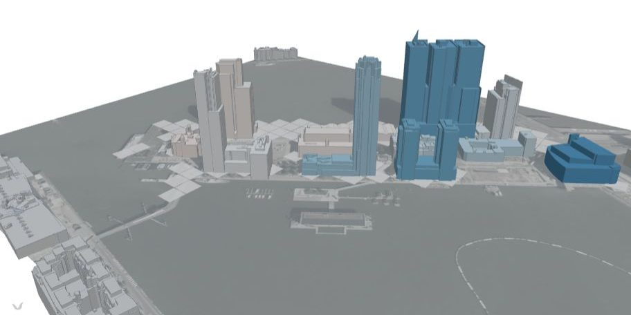

Buildings: sinking, shrinking and growing in the heat
The radar points sit on buildings, and buildings move. Before the radar can say anything about the air, the movement of every building has to be modelled and taken out. This page is chapter 4 of the report: the model, one term at a time, and what the radar record of Kop van Zuid looks like.
Why the buildings matter
The project reads the air from how much more the high radar points seem to move than the low ones. The air's share of that is tiny: one N-unit of refractivity across 100 m of height changes the radar distance by about a tenth of a millimetre.
The buildings move far more. A 100 m tower grows by about 1 mm for every degree it warms, while that degree changes the air's delay across the same 100 m by only about 0.12 mm. Over a year, the towers of Kop van Zuid swing by millimetres with the seasons, and over the years they settle by several millimetres more. That is ten to a few hundred times the air signal, and it also grows with height. The buildings therefore have to be modelled first, and modelled well.

Interactive Kop van Zuid in three dimensions Every building of the pier, coloured by what the radar saw on it, with a slider through all passes. Orbit, zoom, click a building for its numbers, launch a balloon or show the radar rays. Open the 3D cityThe report models a building's movement as three processes added together:
- Sinking
The whole building goes down at a steady rate. The same at every height.
- Shrinking
The building slowly shortens under its own weight, faster at first. Grows with height.
- Thermal dilation
Taller when warm, shorter when cold. Grows with height and follows the seasons.
What is measured
Take one building with m radar points spread over its height, seen on n passes. For point i on pass j, the radar gives yij, its movement along the radar's line of sight since a first pass t0. The point sits at height hi above the foundation and the radar looks at it at an angle θi from the vertical, about 23° here. If the building only moves up and down, the radar sees the part of that movement along its line of sight:
A positive movement is towards the satellite, so up. That is also the sign of the radar data we use: four independent checks agree on it (Estimation). Time and temperature are counted from the first pass, so every term below is zero on that pass.
In the sliders below, two points on one building are followed: one 85 m up and one 5 m up, 80 m apart like the estimation's two 40 m layers. The temperature is the real daily mean at Rotterdam airport on each of the 213 pass dates from 2020 to 2026. The red line, high minus low, is the height contrast: the part that looks like air and that the estimation has to remove.
Sinking
The whole building moves down as one block, at a constant speed vs. The foundation and the roof go down together, so sinking does not depend on height or on temperature. On its own it changes nothing in the height contrast: try it.
This widget needs JavaScript.
Shrinking
A building under its own load slowly gets shorter: concrete creeps and shrinks. The shortening is fastest just after construction and slows down over the years. Because the radar only measures from t0 onwards, the moment construction ended does not need to be known. The model only needs how fast the building was shortening on the first pass, γ0, and how quickly that slows down, the relaxation time τc:
Adding this up from the first pass, and assuming the whole height shortens by the same fraction, a point at height hi comes down by
So the higher the point, the more it comes down, and the rate fades with time. With a long τc the curve is almost a straight line, indistinguishable from a steady trend; with a short one it bends and levels off within the record.
This widget needs JavaScript.
Thermal dilation
A building grows when it warms and shrinks when it cools, by the same fraction α per degree over its whole height. For concrete, α is about 10 × 10⁻⁶ per kelvin (Eurocode 2): a 100 m tower that warms by 1 K grows by 1 mm. The temperature is counted from the first pass, so the term is zero there.
This is the hard term. The air also changes with temperature, and its effect also grows with height. Seen from the satellite, a warm building and warm air can look the same. How the estimation keeps them apart is under Parameter estimation.
This widget needs JavaScript.
The combined model
The movement of point i on pass j is the sum of the three:
Four numbers per building. Everything the model does not explain ends up in εij: the noise, and the air we are after. Since all three terms are zero on the first pass, no extra offset is needed. Below, all four sliders at once, with the green band showing what a change of 10 N-units in the air does across the same 80 m.
This widget needs JavaScript.
Widget: line of sight y = cos 23° · d(h, t) for h = 85 m and 5 m, Δt from the 213 TerraSAR-X pass dates (8 January 2020 to 24 August 2026), ΔT from the KNMI 344 daily mean on those dates. The air band is 10⁻³ · 80 m · 10 N / cos 23° ≈ 0.87 mm, the line-of-sight equivalent the estimation uses for its air prior. Defaults: vs = −2 mm/yr, γ0 = 25 × 10⁻⁶ /yr (2.5 mm per 100 m per year at the first pass, the simulation's shrinking rate), τc = 5 yr, α = 10 × 10⁻⁶ /K. The shrinking term has the same form as fit_report_group in the team's estimation code.
What the radar sees
The model above is a description. The players below show the radar record itself: how the buildings of Kop van Zuid actually moved, pass by pass, and how much of it the trend and the seasons explain.
Play, pause and step with the buttons, drag the slider to scrub, or focus a player and use the arrow keys and the space bar. The players pause when scrolled out of view.
The scene, pass by pass
Kop van Zuid on a 10 m grid, north up; the ground-only grid stays at 25 m because those points are three times sparser. Each cell is coloured by how much its points moved since the previous pass, on a scale that never changes. On most passes the whole pier turns one shade together: that common change is the atmosphere over the whole scene, the reference point, or both.Measured against the ground, the median of the reference ground points is zero on every pass by construction, so a shade shared by the whole pier largely drops out and what is left is how buildings and quays move relative to the street. Switch to "displacement since 2020" to see the sinking and shrinking add up, or to "minus each cell's trend" to see the seasons.
This animation needs JavaScript.
From the cell grids, 10 m over all points and 25 m over ground points only, the spread of the points inside each cell, and the building outlines.
Taking it apart: trend and yearly wave
One number per pass for the whole scene, the height gradient s(t): how much more the high points moved than the low ones, in mm per 100 m of height. It is the height contrast of the sliders above, measured. The player takes it apart in four steps: as measured; the slow trend removed (shrinking, and towers settling faster than the ground), which in this set is small (-0.03 mm per 100 m per year), the north-east towers sinking faster than the ground; the yearly wave removed (thermal dilation, the buildings growing in summer); and the remainder differenced from pass to pass. That leftover, about 1.6 mm per 100 m, is 7 times the formal noise of the fit and about 15 N-units if it were all air. That does not make it air: a fit for the buildings can also absorb air that follows the temperature, which is why the estimation uses an air prior.
This animation needs JavaScript.
From the scene-wide s(t) and its fitted trend and yearly wave.
Buildings or air?
Thermal dilation and warm air both make the high points seem to rise. This player puts the two explanations side by side. Left, the 11-day changes of s(t), of a lagged air temperature standing in for the buildings, and of the lowest 100 m of refractivity above De Bilt. Right, the change of s(t) against each of the two, one dot per pass filling in as time advances, with the fitted line and, dashed, what physics would give if that explanation carried all of it. In the September reading both fitted lines are real and both fall short by the same third. Both fitted lines are real: the temperature line reaches 72 % of what the physics would give and the refractivity line 42 %. A plain fit like this cannot tell the buildings from air that follows the temperature; the estimation's air prior is the answer. The south-west half is the cleaner test.
This animation needs JavaScript.
From the joint fit on 212 pairs of passes. Temperatures: KNMI station 344 Rotterdam, daily data from the KNMI daily-data service (daggegevens.knmi.nl), CC BY 4.0.
The year clock
Thermal dilation over one year, on a clock face with January at the top. As the hand sweeps, each pass drops a dot: the open ground in blue, the buildings above 40 m in red, after offset, trend and curvature are removed per point. The lines are the monthly means; the dotted trace inside is the air temperature, monthly means over 2014-20232014-2026. The buildings peak in late July with the air. The open ground peaks in February, half a year away.Measured against the ground, the open ground hardly moves through the year (0.13 mm), as expected when the reference is itself made of ground points. The buildings above 40 m swing 2.9 mm and peak around day 217, a little after the air (day 205), as if the buildings take a while to warm through. The ground at the towers' feet (tick the box) swings 0.53 mm and peaks around day 229.
This animation needs JavaScript.
From groups of 2 276 to 3 454 points, with the KNMI monthly means.
The height signal
What is left once the buildings are out should grow with height in the way the air does. These two players look at the height dependence directly, before any building model: they are a first look at the raw signal, not the project's result. The estimation fits the buildings first and then gives the refractivity of the air per 40 m layer, 3 to 43 m and 43 to 123 m above sea level, for every pass (Estimation).
The height gradient, pass by pass
Above, the mean displacement of ten height bands against their height, relative to the scene mean, with the fitted line for that pass; its slope is s(t). Below, the series of that slope over the whole record, with a marker following the frame. The tilt above and the curve below are the same quantity, and most of the tilt is seasonal and slow: in summer the high bands sit to the right, in winter to the left. That is thermal dilation.
This animation needs JavaScript.
From the height bands, 202 to 4 619 points each.
A virtual balloon
For every pair of consecutive passes a balloon rises from the lowest height bin to 89 m, the highest radar point of the set, and drops a dot at each bin: how much that bin's residual changed over the 11 days, relative to the lowest bin. The red line is the fit through the dots; its slope is one gradient over the whole height, a quick view of a single pass. The dashed line is what the De Bilt sounding predicts for the same 11 days. On most passes the dots fall close to a straight line, and the two series on the right follow each other with a correlation of about 0.47. The estimation goes further than this one gradient: it removes each building's own movement first and gives a refractivity per 40 m layer.
This animation needs JavaScript.
From the binned height profile and the De Bilt soundings within 36 h of a pass.
Parameter estimation
All observations of one building go into one vector y = f(x) + ε, and the four parameters are found by weighted least squares, with γ0 ≥ 0 and τc > 0 (report eqs. 50 and 51). The model is nonlinear only in τc. For a fixed τc it is linear in vs, γ0 and α, so those three follow from ordinary weighted least squares, and τc is the value that leaves the smallest weighted residual (eqs. 52 to 56). The team's code searches τc from 0.25 years upwards on a logarithmic grid and then refines it.
One problem the report's model cannot solve by itself: the thermal term hi α ΔTj and an air change that follows the temperature are both proportional to height, so for one building they cannot be told apart. Fitted naively, α swallows part of the air. The estimation therefore first takes out what the weather station predicts for the air, fits the buildings, and puts the prediction back afterwards: the air prior. On the simulation that gets α back to 7.02 × 10⁻⁶ /K against a true 7.00, where the naive fit gives 9.05.
What is left: the residuals
With the four parameters estimated, the model's movement of every point is subtracted from what the radar measured. What is left, the residual, is read as the air plus noise. It can also hold anything the model leaves out: local deformation of one facade, a building that does not behave like a single block, or measurement errors. The root mean square of the residuals measures how much is left. Plotted against time, height and temperature, the residuals show where the model falls short; a pattern there means a process the four parameters do not describe.
The residuals are averaged per height layer and per pass and turned into refractivity. The report compares motion fitted per building or per scatterer; ground-station agreement does not independently validate the vertical profile. Inspect the shared report export on Results and the current Estimation method.